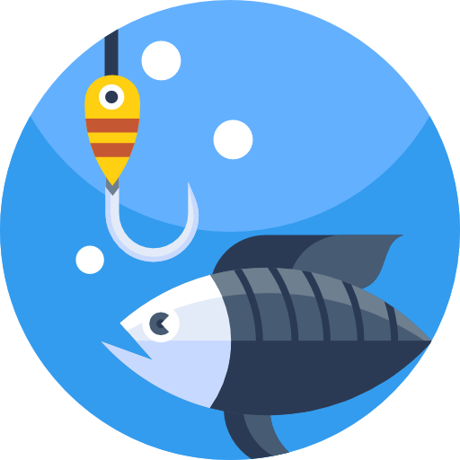
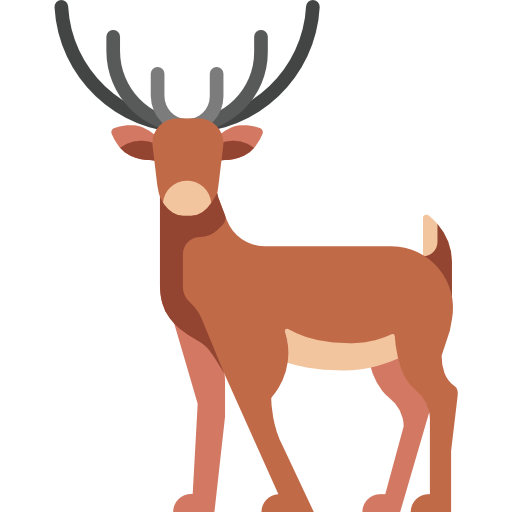

I love fishing. I have been fishing since I was 10 years old. This activity provides a privileged encounter with nature and the great outdoors. I've fished in many places in Quebec and Morocco. I love the thrill of the challenge, the calm of the wait and the anticipation of a successful catch.
About me
Hi, I'm Abdessalam Ait Haqi, a 20 year old a computer science student. I'm passionate about web development, app development and artificial intelligence and I'm always looking for new challenges.
Fishing
Dungeons & Dragons
I've been playing D&D with my friends and family since I was 12-years-old. I love the roleplay aspect of the game and the creativity it requires. I have played with many different groups and have been the DM for many campaigns.

Hunting
Another interest of mine is hunting.I love the thrill of the hunt and the challenge of finding the right spot to hunt. Hunting gives me an intimate connection to nature and a real appreciation for animal lives.
Filming and editing drone footage
A more recent interest of mine is filming and editing drone footage. Since 2018, I've been flying drones and filming and editing drone footage of Quebec's beautiful landscapes. Flying a drone gives me a perspective of the world that I've never had before. I love the challenge of learning how to fly it and the thrill of capturing beautiful footage. I've been learning to edit footage on my own, adding music and effects to make the footage more interesting.

Reading books
This is perhaps my most steady interest. I've been reading books since I was 5 years old. I love the the knowledge and views gained from reading a book. I've been reading books in both French and English. I've been reading books in many different genres, from fantasy to science fiction to history to philosophy.